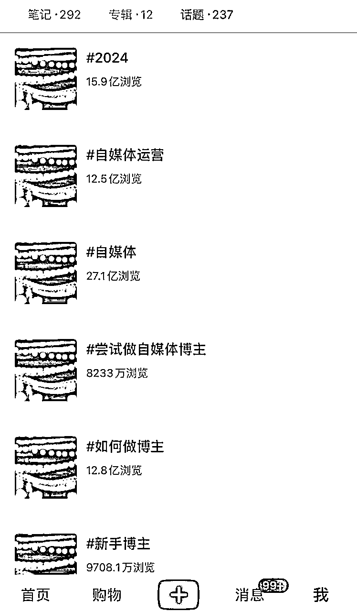
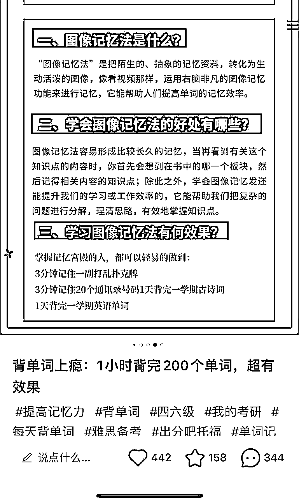
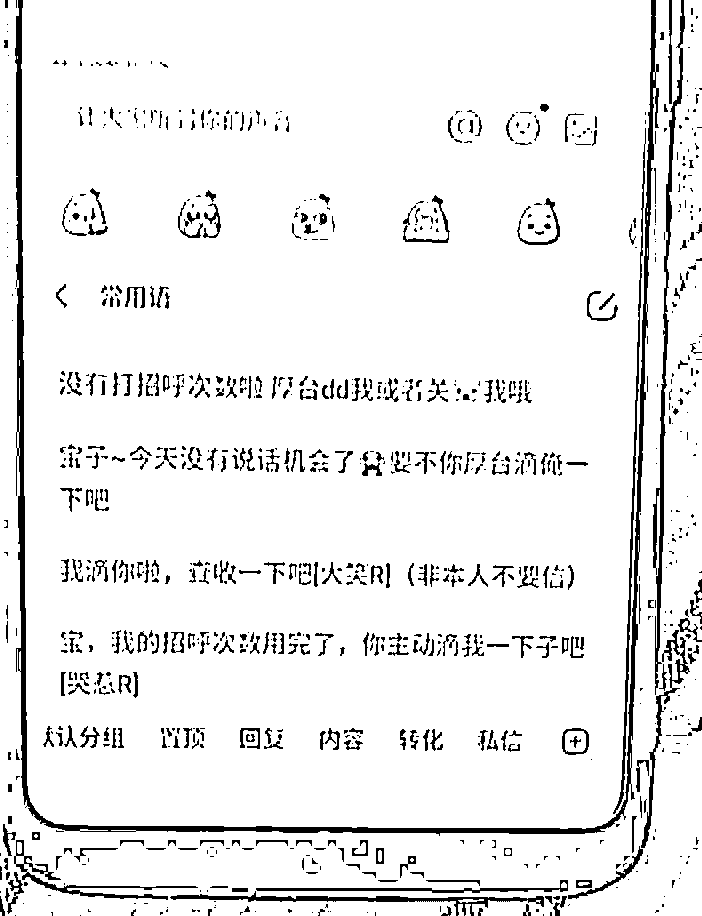

来源：https://giwb0zv0cv.feishu.cn/docx/Vwhyd4Ctpom71uxmOW8cEuOPn9g
大家好 第一句想说的是好久不见 距离上次分享过去一年多了 真是时间飞快呀，世事无常 去年3月参加完杭州聚会之后就得了颈椎病 还挺厉害的 卧床半年多（伴随焦虑 抑郁）一直看病 自救 看心理学书籍，折腾了近一年总算活了过来（有关康复过程下次分享 咱们圈友 不是电脑就是手机 很多人都有颈椎或腰椎的问题 日常姿势不对或过劳成疾 症状大概会敲门 时间问题，如果提前预防或及早干预再好不过了）下面进入今天的主题 哈哈
今年3-6月在小红书上做了自媒体，私域，网赚，鞋服，女性成长，考研考证...等领域的引流（个人号 自然流），效果都还不错，后面陆续都跟大家分享，今天先分享如何在小红书引流：《想做自媒体的用户》
借用这篇说说废号流的基本操作流程，适用于想在小红书上通过引流到微信进行成交的所有行业。不过，除了金融等几个比较特殊且需要执照的行业
先说结果，矩阵引流的方式 个人号，一共做了5个账号，三个表现良好两个一般（有出现违规 没出现封号和限流）
实现了：单篇笔记引流300人，平均稳定每天能加50左右（贴几个图）
注：“不是说日产百粉吗？哼，标题党！！！” 欸，听我狡辩 “我是做了5个号 如果两三人工作室可以做10个来实现，另日产百粉这个标题显得更加高大威猛，孩子写了很久 想让更多的人看到能有什么坏心思呢☺️”
几点总结
1.自媒体赛道在小红书来有点小卷了，已经有人筑起围墙，但是普通人想赚点小钱还是比较容易的（一个月1-3w）
2.是要做高粉丝数接广告还是引流私域卖货是2个思路：一个争取做大爆款 反复发 多涨粉，一个尽可能多的低调的引流 数据太高还要主动隐藏作品 已减少同行看到你的几率
3.刷同行的时候不要因为看到了性感美女就点进去看 这样会打乱推荐，你会发现看着看着半天就过去了 推荐也变难以描述...（我被酒色所伤,竟如此憔悴-从今日起～戒酒）
正文开始❤️❤️❤️❤️❤️
定位（自媒体）已经确定好的情况下，下一步要考虑的就是内容的表现形式 在确定内容的表现形式上我总结了3个步骤：捕获、加载、分析
直接先拿出3~5天的时间把整个小红书上所有同行都看一遍（简单粗暴一点会更好），乔布斯爷爷说过：创新是基于旧元素的重新组合，那我们脑袋中一定要先有大量的旧元素，所以我们第一个要做的事情就是捕获它们
几个方法
关键词是很重要的环节：通过关键词，你能搜到别人的笔记 找到对标，通过自己布局关键词别人能找到我们的笔记增加被动流量。
自媒体相关的关键词：
自媒体运营 小红书运营 发布时间 vlog选题 脚本 新人博主 人设 赛道 账号搭建 拍摄技巧 剪辑工具定位 爆款标题 爆款关键词 如何做内容 下班后做自媒体 自媒体人常用网站 黄金发布时间……
通过这些关键词我们能找到大量的同行笔记（一开始不用这么多 有5.6个关键词，剩下通过小红书的下拉词或者别人的笔记标题里的关键词不断的去扩展新的关键词 新的关键词又能找到更多的笔记 如此循环往复，抓住一个线索 揪出更多线索，就当是玩密室逃脱了 这波操作不光反向消费还给自己创造了效益 资本看了直呼666）
通过别人下面笔记的话题，可以找到更多笔记，像下图一样自媒体相关标签全部收藏起来（我们像个仓鼠一样 把自媒体相关的话题收藏起来 这样就可以每天早上蹲坑的时候浏览一个话题了---卷王的自我修养）
不过最好做完关键词和首页法再做话题法（不然话题法推荐的可能不是我们需要的）

大数据比你更懂你 看相关笔记 再返回首页，看推荐的笔记就可以发现很多新的账号 笔记 选题 玩法
正如开篇所说的：
点击需要的 ：比如图文而非视频、自媒体相关的、你想模仿的
而不是想看的，尽量忍住点击诸如：杨幂 比基尼，蔡徐坤 王俊凯，辣火锅 过油肉以及“婆婆说的哪句话让你无法释怀” “单位里毁三观的八卦” “线性代数” “八段锦” “凡人修仙传”.....
做成账号运气很重要，比如对标账号的来源很大的概率就是小红书的首页推荐，当官方给你推荐了一个非常棒的低粉高赞的账号 而表现形式正好适合你模仿，这何尝不是上天给你投的一票呢？
为了更清楚听到上帝的声音 我通常会用拿3个以上手机来使用首页法，声音从3个方向传来 比原来清新不少。
喜欢更快捷的圈友也可以选择工具，蝉妈妈 新红都有一个叫做低粉高赞的功能，可以通过相关赛道去找，也可以关键词去找 数据可以导出（省钱小妙招：短期会员闲鱼 拼夕夕可入）
上面一共有4个方法，大家找到合适自己的就行，如果你像我一样喜欢人肉刷，就直接手动利于培养网感，数据分析型选手就用工具。每个人优势不一样，不过殊途同归，用自己喜欢的方式就行
恭喜你 看完了大量的笔记你已经对该领域的爆款选题和表现形式在脑海里有了大概的画面
下一步我们让画面更加清晰起来
有大致的方向后 不妨拿一张纸都写下来，加载一番让数据更清晰
2个原则：A.可以出爆款的内容形式 B.自己有可能模仿的形式
这里列举了5种常见的风格 抛砖引玉，想说的是：这里只加载不分析 重要的事只有一件。做的时候大家自己总结 尽可能多列举 少遗漏，其实这一步就是可行性假设
渣男语录：这一步是广撒网 多敛鱼, 下一步才是择优而从之
接下来就是分析我们要使用哪种形式起号
两个原则：A.哪种形式一直有流量 B.哪种形式最近流量大 结论来源于大量观察和对比
只有发平台推的内容形式 我们才会获得平台的流量倾斜，达到快速 把账号做起来的目的；
我的观察：
我们在加载这个环节整理出了10个笔记形式，然后在分析阶段又分析出平台最近正在发力推的2~3种形式，那我们可以就这2~3种形式起几个账号赛马，最后哪个形式数据好就着重再发哪个形式，这就到了测试的环节（测试环节之前的大数据调研是非常有必要的，它大大缩短了我们需要测试的工作量）大数据调研完不是结束 而是开始，这个时候才是真正开始做账号，我们选择的这个内容形式就是平台欢迎的，基于此的情况下 我们再去考虑方面选题内容就相当于顺水推舟了
采用哪种笔记形式起号 最后会发展成直觉，即能直觉感知到平台现在推什么样形式的内容，从理性分析进化到直觉就是网感的形成，幸运的是和考驾照一样 它是可以通过练习来提高的
确定了内容风格之后，我们终于来到了实操环节：爆款选题。
先说个有趣的现象：经常在自媒体账号上看历史相关的圈友一定知道香积寺之战，只要你发这个战役大概率有流量。包括我刚开始看到这个视频，看了十几个相关的，为什么呢？意难平！唐朝最强大的两支军队，干起来杀了的天昏暗地 由此开启了盛唐转衰的开端（这个是营销号这么讲的具体的我也不太懂），这段历史（先不管他真假）极大地挑拨了吃瓜群众的情绪，上一次强烈的意难平是张小凡和碧瑶的爱情故事，茅草屋旁 微风吹过 清脆的铃铛声还吟绕在耳旁。
爆款选题的核心是：找到所在领域的30个“香积寺之战”（也就是用户关心的话题）
找爆款选题的具体方法
当确定了笔记形式时，你的账号推荐也差不多刷好了 我们也学会了用首页法 关键词法 标签法...来查找同行的数据，在此基础上我们直接进行分析就可以了，只不过分析的原则变成了爆款选题的特点
（我们大可以把他当成找茬游戏 一起来找茬，想说点题外话：如果有可能的话尽量把工作的过程游戏化一些 创业过程太苦闷了 而正反馈又是不确定因素，所以我们最好还是自己创造及时正反馈。还有一点是当感觉自己倾注了大量的心血之后，就很想要收获 见效，但是当你把这个过程当成游戏的话，在做的过程中体就体验到了快乐 自然会减低预期或者急于求成，不是尽量不要把工作当工作 或许可以增加我们见到美好后天的概率。）
只要符合一个就可以把它当做爆款选题，如果符合多个说明这个选题是精品中的精品：
A低粉高赞 B反复出现 C异常值 D贡献值+近期出现 下面举例：
（一个选题反复出现 且反复有流量）
（这个选题发了五六遍 基本上这个账号能做成90%的靠这个选题破局的 很符合2/8法则）
小红书面壁人，你的主线任务是：找到你的破壁选题！！！
（看点赞 相比其他 奇高！事出无常必有妖，元芳 你怎么看）
（千分以内的账号，赞粉比例越大越好）
除了上面几个特点，还有一些爆款选题常见类型
任何技能类领域都会有100个问题在等着学习者
比如做自媒体，会遇到如何定位，如何找对标，做什么产品，变现在方式
学做饭就会遇到怎么买菜，洗菜，切菜，调料怎么放（我最近在学做饭哈哈）。自媒体，减肥，穿搭，化妆，开车，写作，滑翔伞，游泳，瑜伽，冥想任何技能类的赛道你需要抛出“如何”“怎样”就可以找到相关选爆款选题：自由泳如何学习 自媒体如何变现做 炒菜放调料的正确顺序……
人类对工具的迷信程度可是非常大的。
自媒体文案排版工具，做图工具，剪辑工具，你去搜吧，一搜一个不吱声，流量大的可怕，也不知道是不是在远古时候拿着大棒子驱兽野兽的时候，就开始把工具视为神明。
互联网是最近几十年的新鲜产物，在此之前 人类遇到问题的不二解决方案：1.看书 2.摇人
在小红书亲子育儿书单，女性成长书单，创业必看书单流量大的可怕，如果你做相关领域不妨先怼几篇：必看书单合集 记录片合集
去年有个朋友做减肥账号 没什么起色，我简单搜了一下发现有个叫：秦昊减肥法，虽然我不知道他是谁，但是感觉很火的样子，我让他发几篇试试，结果发了几篇很快出了爆款
还有过年时候的热辣滚烫 那段时间把减肥和贾玲绑到一起 流量也少不了
还有杨幂同款的衣服，王一博同款的DUNK
PS: 我就说我每天刷抖音不是堕落吧，每一个部抖音短剧和知乎爽文 都是我努力小瞬间🤪（想说的是：真爽，哈哈！如果上天再给我一次选择我还是会看 而且是不带任何自责的看 全身心接纳自己放松的看）
对于小红书起号而言，前几篇笔记尤为重要，所以务必一开始就扔王炸。
很多选题还具有时间性，去年快过春节时 新号随便发了一条《2024上半年自媒体风口 听懂了买房买车》大爆了，之后因为过年回家走亲戚 见朋友 心态上比较懒，没有持续更新 属于给机会没把握住
因为大家过年回家到了树立明年新目标的时候了 你这个时候发这个选题就基本上符合了“势”
私域赛道看到个不错的账号 他的用户是商家，五一那段时间他发的5.1活动选题笔记特别火，往前浏览 上一次他数据比较好是春节假期商家如何做活动，其他时候都是数据平平 或者靠这两个时间段的笔记带起来的
如果能提前感知到内容风向的话 不管要去哪里，在顺风时候出行永远比逆风时候出行轻松省力的多，就想躺着把钱赚了😝😝😝
有句话是7分选题三分内容，这句话本质上来讲是没毛病的，但是我之前犯了个错误就认为内容不重要。选题才是最重要的。
其实都很重要，选题和内容他们分别解决了不同的问题。选题决定用户看不看你，他解决的是抢占注意力，内容主是主要解决的是营销。看完你内容加会不会➕你微信或下单
也可以这么理解：人身上心脏和脑袋最重要的，那就能说明手脚和脾胃不重要了吗？
不，他们一起构成了长在红旗下 生在春风里，讲文明 懂礼貌的社会主义接班人~星月
选题和内容也一样，一起构建出一个体系，他们共同完成了对用户的心智占领。
上面说了内容展现形式，现在说说内容类型
举例：涨粉型，引导型，干货型，互动性…
用户眼里，粉丝量级代表专业度相当于权威光环，涨粉型内容有一种就是互联网嘴替
比如今年的电影：年会不能停 用一个电影的形式说出了打工人的无奈还、还有针对宝妈的鸡汤类的内容说出了全职妈妈的内心苦闷，当你站在他的角度上思考问题，和他统一战线当他的嘴替，关心他，他一定会投你一票！
所以去诉说宝妈的苦楚就会得到宝妈的支持，述说单身妈妈的不易就会单身妈妈的支持，诉说创业者的艰辛就能得到创业者的共鸣。
就是站在对方的角度输出共情式内容！
做好二点：1关爱 2重视（这是童年中的孩童最需要的两种情绪 大部分人幼年都没有被满足 需要用一生来治愈）在你这里能得到关爱和重视能可以弥补他现有生命中的缺失，用户大概率会关注你，因为生活中懂他 理解他 支持他的人太少了，这个时候他看到一个博主诉说他的遭遇 设身处地为他考虑 也能懂他的无奈 这对于他来说无异于生命中的一道光 于身处黑暗的人靠近光来说是一种本能 数据这不就来了。
咱们圈友就不一样了 这里的每个人都活成了一束光 互相照亮 彼此闪耀，艾玛 怎么突然有点冷呢，铁子们此刻求个一键三连不过分吧（这波触发连招+gcl属实有点厚脸皮了，哈哈😊）
涨粉型内容，此外还有故事型 比如那种挑战100天xxx（故事让人有代入感 人的天性都爱听故事 连载的话就更好吸粉了 电视剧不就是这样吸引你看下一集嘛）
娱乐八卦型（你要讲正经的我可能不关注 你要给我讲不正经的那我一定要狠狠关注🤫）
游戏 故事 八卦 都是天性使然 这些内容就像甜食一样刻在DNA中 无需用力 我们要做到只是是轻轻挑拨而已（还记得太极马掌门的敦敦教诲嘛 接化发！四俩拨千斤~）
有目的的引导用户做动作的内容（下单 引流）
就像去年做的学习类账号一样，告诉用户：
我有一招从天而降的掌法（图像记忆法），学会了以后就可以打败怪兽（考研考证）， 成为武林第一高手（过目不忘 倒背四大名著），从此一统江湖 光大我日月神教（升职加薪）
这样用户就会说求 求 求 求
你就可以说：佛度有缘人，v我50 看看实力

干货型内容比较简单又比较难，抛开选题 简单在于只要真心的分享就可以，也不用想着营销或要达成什么样的目的，只要确定你分享的内容对别人有帮助就ok了，难点就在于怎么才能掌握干货，只能通过不断的学习和实践才能掌握干货，学习的本身而言是走上坡路，肯定不如躺平舒服一些，
当然还可以采用另外一种方法 搬运，搬运的内容的话，新手是看不出所以然的，所以你如果在公域引流面对的人群是小白或者从0~1的人。直接搬运内容也没问题，因为这部分人他也没有实践，所以在没有实践的情况下，他也就无法识别真假
所以我们现在就有两个办法，第一是搬运，第二是实践（如果单纯的是接广或卖货的话 我觉得去搬运也挺好）
搬运的要义就在信息差，要做小红书 素材来源可以是：抖音 快手 b站 红书 书籍 海外……
个人IP的话，随着自己在某个领域的不断学习和实践 自然会有不同的知识 技巧 心得分享。
我认为掌握了互动性内容，绝对是掌握了做起来账号最关键的因素之一
什么是互动型内容，小红书是个女性为主的平台。女性一天要说的话比男性多10倍以上。且不论男女都有很大的倾诉需求，就这个点来说 完全可以把小红书当做一个诉讼树洞
下图：
如果能在所在领域 找到几个容易引起人们争议讨论的话题，账号大概率会起飞，你想一个帖子发出去就有几千个评论，你可以把这个帖子当你开了个房间，然后有无数的人进来针对你开设的这个房间主题进行相关的讨论和交流，不过热的是帖子 要实现具体目标（涨粉 带货 引流）还需文案或评论区引导
各种形式的内容数十种（这里只列举了常见的几种 写不完 根本写不完），能做起来一个账号 各类内容并不是说都要有，但光一个肯定是不行的。
抓眼球得有 情绪价值得有 实用价值得有，大白话是“有趣有料有用”
心理学角度：哺乳脑+情绪脑+理性脑 都需要满足
具体要怎么去组合使用？我是先练习一个，再掌握另外一个，然后就可以把学会的根据需要组合使用
引流用的常规玩法 评论区引导：群聊和私信
群聊的好处在于被动（现在变懒了很多 能被动尽量不主动） 睡觉的时也能帮你引流
私信及时性和导流率比较高
评论区置顶引导 两个方法
A.是主号评论置顶，B.小号评论置顶
主号评论置顶的话内容不要自创，直接看同行的，然后复制粘贴就行，可以多收集一些，然后放到讯飞输入法的常用语里面（自创的话，被吞的概率还挺大 我被吞了几次老实了）
小号评论的话就拿小号在自己的笔记里评论666 求分享 求带 把这个评论置顶，然后在这个评论下方主号进行评论 来引导私信或者进群聊（这样麻烦一点，更加安全吧 毕竟用小号评论正常内容后置顶 这都是合规操作）或在小号的评论下方留下群聊链接
其他注意事项
1.及时回复用户的评论，后面的人才会有和你有联系感和可得性

2.有很多人不评论 直接在后台私信的 在陌生人信息里 不要要把这部分漏回了
3.回复及时的话加微率还是蛮高的 一半以上
4.私信我比较简单粗暴了 直接发的营销内容（不装了 我摊牌了）
5.私信的时候点开对方头像笔记看一看（是嫌疑人的话就不理他了 ）
走的就是废号流 也不怕举报啥的（反正起号就那点事儿 对爆款内容也都熟悉了 很多时候旧账号还没新账号好用，用一段时间注销 再重新申请 也挺好），结果目前还没被举报和限流 好生失望，之前小心翼翼的时候动不动出事，有趣。
反动派都是纸老虎！你强她就弱！！行动起来 大胆起来！！！
自说自话：
本来想总结一下的 后来一看，写得很细致 每一个章节也都有小结，想说的都说了 很完美 哈哈
其实在笔记形式之前其实还有一个标题的，基本常识：写了设备 网络 定位 账号包装...一些起号的东西，写着写着好几千字（又写不完了），后来就把它拉出去 等我再完善完善，把它变成一个单独的文章吧，就叫《起号流程》大家觉得怎么样？
有几个地方没有深入写是因为之前的精华帖分享过了 就不重复造车了，比如：定位、放钩子、封面制作、评论区的引导和图片的布局.....
传送门：
一周涨粉6000+ 变现3w 复盘：https://t.zsxq.com/xcvhN
引流效果暴增10倍的爆款笔记框架：https://t.zsxq.com/wV0I7
求助一下：
写作的时间还可以接受（大概4.5个上午吧），排版和插图感觉比较费劲（典型的打字10分钟 润色半小时） 我在想 如果我想做个没有感情的输出机器的话：
1.图就得忍痛少放点（大家没意见吧 嗯 对一个劲椎病患者大家一定是非常宽容的）
2.排版方面有没有比较擅长的且有空闲时间的伙伴勾搭我一下give me help（感激不尽）
感谢认识星城老师也是现在的好兄弟 教会我小红书引流。让我在30岁也有了一技之长，不用大热天在外面做“铁人三项”，实现我家宝宝的奶粉无忧，时不时还能吃个冰榴莲解暑而不用心疼
感谢芷蓝姐 教我互联网营销 知识付费 个人IP和很多做人做事的道理，在我眼里芷蓝姐就像个互联网老匠人，头脑里有非常多的技艺 手上还有各种工具 你在这个行当中遇到的任何棘手问题 在她那儿基本都可以迎刃而解，事情看得及其透彻，人又活得通透。
虽然目前没有在这方面做出很好的成绩 但是我还活着 活着就有希望，哈哈
感谢靠谱姐 教我营销跳谈单技巧，我单方面输出还行（键盘侠本侠） 但是只要和人沟通的场合 不管是网上还是线下 就不太会了。谈单的时候会遇到很多无理的客户提出离谱的要求，比如：不停的问 不断的试探 想白嫖……在此之前只能触发我的：
a技能~生闷气、b技能~无能狂怒 化身C语言玩家、c技能~怼我老婆几句换来几个大逼兜
现在变成了要么愉快成交 要么愉快聊天 要么让对方生闷气😊其中滋味不足为外人道也
感谢涛哥 在不是很熟的情况下 涛哥的耐心指导了半小时解决我的困惑，此刻也明白了生财大师兄的含义，今年多争取多靠近涛哥 哈哈😊
感谢山西生财的伙伴
杰哥 慧姐 司令 大玲 虾总 小妖 新亮 船长
是大家的陪伴让我渡过最难熬的低谷期，没有大家的陪伴和支持 用我家孩子的话说：我怕是早就噶了
去年最难受的时候杰哥（生财混剪第1人）和慧姐（抖音中老年市场）开导我，大玲（抖音百万粉博主 发帖少）和船长（打宝妈粉）带我打羽毛球，和司令（女装直播 年投放流水上亿 期待发帖）互相鼓励，听虾总（国内剧本杀头部）讲东南亚创业故事，一起过小妖（剧本杀作者 虾总合伙人）的生日，在新亮老板（白酒私域头部 应该没发帖 期待中）公司破圈，点点滴滴 回忆起来都是幸福🥰🥰🥰
感谢生财团队
上面的师长 朋友都是在生财链接 认识的
是生财让我实现了创业路上“海内存知己，天涯若比邻”
如果没有生财，我想 我早就放弃了互联网这条路：太汤姆难了！孤独、看不到方向让人绝望。
张磊说:与谁同行比要去的远方更重要，庆幸现在知道要去哪里且有优秀的伙伴同行的每一天！
一起生财有术！
交流微信：axx68886